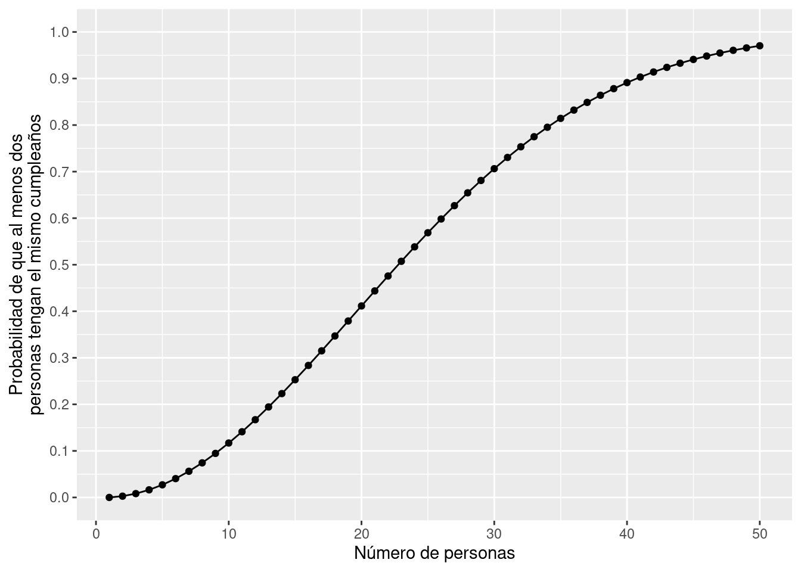
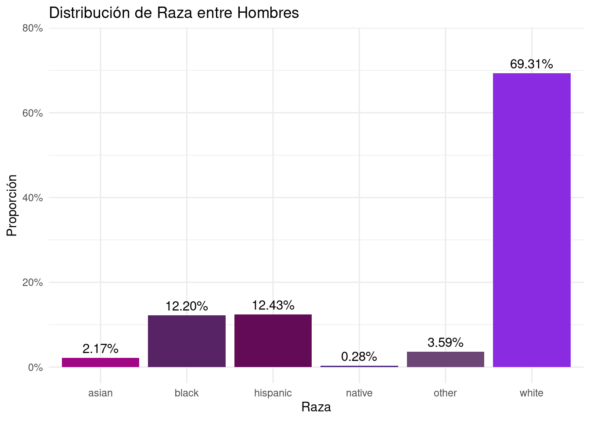

```{r}
2+2
```[1] 4Este ejercicio funcionará como un breve tutorial de R, Rstudio y quarto. Más abajo, encontrarán links útiles para explorar por su propia cuenta detalles que no cubriremos en este espacio. Adicionalmente, realizaremos algunos ejercicios de procesamiento y analisis descriptivo de datos. Este ejercisio esta diseñado para estudiantes del curso soc3070, que ya tienen algo de experiencia con R y/o desean realizar el cambio de stata o spss a R. Por múltiples razones, alentamos el uso del lenguaje R y la infinidad de librerías disponibles para el procesamiento de datos y el análisis estadístico, especialmente la familia de librerías Tidyverse.

Trabajaremos con RScripts (archivos .R), en un arhivo Quarto (archivos .qmd). Pueden encontrar más información en este link
Quarto es una versión multilingüe de próxima generación de RMarkdown. Al igual que RMarkdown, Quarto usa Knitr para ejecutar código R y, por lo tanto, puede procesar la mayoría de los archivos Rmd existentes sin modificaciones.
La mayoría del código utulizado en los ejemplos incluirá funciones de la familia de librerías Tidyverse. Más información acá
R y Rstudio lo puedes instalar siguiendo los instrucciones en este link
Algunos textos que pueden ser de utilidad.
.qmdchunck de códigoCon la combinación de teclas ctrl + alt + i se inserta un chunck de cósigo. Pueden formatear en {} el tipo de lenguaje que usaran dentro de él. Una de las ventajas de trabajar con quarto o Rmarkdown es que podemos usar distintos lenguajes en un mismo documento.
```{r}
2+2
```[1] 4El operador de tubería %>% fue introducido por el paquete magrittr y es adoptado por tidyverse (y otros famosos como igraph), que usaremos frecuentemente en este curso.
La idea detrás de las tuberías es, en esencia, muy simple:
f(g(x)) se convierte en x %>% g %>% fmean(table(x)) se convierte en x %>% table %>% meanLuego, %>% canaliza la salida de la función anterior (ej., tabla) a la entrada de la siguiente función (p. ej., media). Esto convierte el código de adentro hacia afuera en código de izquierda a derecha. Lo cual lo hace más legible para la mayoría de los occidentales. Adicionalmente se pueden concatenar varias funciones y líneas de código (estilo de codificación común).
Debido a que de izquierda a derecha es la dirección a la que la mayoría de nosotros estamos acostumbrados a leer, las canalizaciones hacen que el código R sea menos engorroso y más legible. También puede ver canalizaciones que concatenan varias líneas de código. Eso es posible y un estilo de codificación común:
En vez de:
```{r}
# x %>% table() %>% mean()
```Puedes escribir
```{r}
# x %>%
# table() %>%
# mean()
```El operador %<>% combina %>% (canalización) y <- (asignación): canaliza el objeto de la izquierda a las operaciones de la derecha y luego asigna el resultado final de las operaciones al objeto original. El siguiente código:
```{r}
# x <- x %>%
# table() %>%
# mean()
```hace lo mismo que el siguiente código (más conciso):
```{r}
#x %<>%
# table() %>%
# mean()
```data.frame) en tidyverseTidyverse incluye el paquete dplyr para la manipulación de marcos de datos. dply es una librería muy usada para la manipulación de todo tipo de datos (excepcionalmente para datos muy grandes conviene usar el formato data.table). Para obtener más información, consulte la hoja de trucos y las viñetas del paquete.
dplyr::filter() se utiliza para crear subconjuntos de filas (casos) de un marco de datos en función de una o varias condiciones. Por ejemplo, queremos seleccionar individuos con determinados valores en una o más variables. Esto conserva la clase del marco de datos, similar a la indexación [ ].
dplyr::select() se usa para crear subconjuntos de columnas (variables) de un marco de datos. Puede utilizar nombres completos de variables o seleccionar variables de muchas otras formas (consulte los ejemplos en la página del manual de selección). Esto conserva la clase del marco de datos, similar a la indexación [ ].
dplyr::pull() se usa para extraer una columna como un vector. Esto no conserva la clase de marco de datos, similar a [[ ]] o $.
```{r, message=F}
#devtools::install_github("kosukeimai/qss-package", build_vignettes = TRUE)
library(qss)
library(tidyverse)
library(httr)
library(car)
library(devtools)
```En el siguiente ejercicio buscamos dar con la distribución de probabilidad de que al menos dos personas tengan el mismo cumpleaños.
```{r}
## Creamos la función de cumpleaños
birthday <- function(k) {
logdenom <- k * log(365) + lfactorial(365 - k)
lognumer <- lfactorial(365)
pr <- 1 - exp(lognumer - logdenom)
pr
}
## Creamos data frame (tibble) con k casos y la probabilidad por k.
bday <- tibble(k = 1:50, pr = birthday(k))
## plot
ggplot(bday, aes(x = k, y = pr)) +
geom_line() +
geom_point() +
scale_y_continuous(str_c("Probabilidad de que al menos dos",
"personas tengan el mismo cumpleaños", sep = "\n"),
limits = c(0, 1), breaks = seq(0, 1, by = 0.1)) +
labs(x = "Número de personas")
```
En el siguiente ejericicio queremos saber la fracción de ensayos (trials) donde al menos dos cumpleaños son iguales
```{r}
## setting seed para replicación
set.seed(4444)
k <- 23 # Número de personas
sims <- 1000 # number of simulations
event <- 0 # contador
for (i in 1:sims) {
days <- sample(1:365, k, replace = TRUE)
days.unique <- unique(days) # cumpleaños únicos
## Si hay duplicados, el número de cumpleaños únicos
## puede ser menos que el número de cumpleaños, que es "k"
if (length(days.unique) < k) {
event <- event + 1
}
}
## fracción de ensayos donde al menos dos cumpleaños son iguales
answer <- event / sims
answer
```[1] 0.511```{r}
data(FLVoters, package = "qss")
## how many observations?
dim(FLVoters)
glimpse(FLVoters)
```[1] 10000 6
Rows: 10,000
Columns: 6
$ surname <chr> "PIEDRA", "LYNCH", "CHESTER", "LATHROP", "HUMMEL", "CHRISTISON…
$ county <int> 115, 115, 115, 115, 115, 115, 115, 115, 1, 1, 115, 115, 115, 1…
$ VTD <int> 66, 13, 103, 80, 8, 55, 84, 48, 41, 39, 26, 45, 11, 48, 22, 88…
$ age <int> 58, 51, 63, 54, 77, 49, 77, 34, 56, 60, 44, 45, 80, 83, 88, 55…
$ gender <chr> "f", "m", "m", "m", "f", "m", "f", "f", "f", "m", "m", "f", "m…
$ race <chr> "white", "white", NA, "white", "white", "white", "white", "whi…```{r}
## Remover observaciones con valores NA
FLVoters <- FLVoters %>% drop_na()
dim(FLVoters)
```[1] 9113 6```{r}
margin_race <- FLVoters %>%
count(race) %>%
mutate(prop = n / sum(n))
tibble(margin_race)
```# A tibble: 6 × 3
race n prop
<chr> <int> <dbl>
1 asian 175 0.0192
2 black 1194 0.131
3 hispanic 1192 0.131
4 native 29 0.00318
5 other 310 0.0340
6 white 6213 0.682 ```{r}
margin_gender <-FLVoters %>%
count(gender) %>%
mutate(prop = n / sum(n))
tibble(margin_gender)
```# A tibble: 2 × 3
gender n prop
<chr> <int> <dbl>
1 f 4883 0.536
2 m 4230 0.464```{r}
margin_race_f <-FLVoters %>%
filter(gender == "f") %>%
count(race) %>%
mutate(prop = n / sum(n))
margin_race_f
``` race n prop
1 asian 83 0.016997747
2 black 678 0.138849068
3 hispanic 666 0.136391563
4 native 17 0.003481466
5 other 158 0.032357157
6 white 3281 0.671922998```{r}
margin_race_m <- FLVoters %>%
filter(gender == "m") %>%
count(race) %>%
mutate(prop = n / sum(n))
margin_race_m
``` race n prop
1 asian 92 0.021749409
2 black 516 0.121985816
3 hispanic 526 0.124349882
4 native 12 0.002836879
5 other 152 0.035933806
6 white 2932 0.693144208```{r}
joint_p <-FLVoters %>%
count(gender, race) %>%
mutate(prop = n / sum(n))
joint_p
``` gender race n prop
1 f asian 83 0.009107868
2 f black 678 0.074399210
3 f hispanic 666 0.073082410
4 f native 17 0.001865467
5 f other 158 0.017337869
6 f white 3281 0.360035115
7 m asian 92 0.010095468
8 m black 516 0.056622408
9 m hispanic 526 0.057719741
10 m native 12 0.001316800
11 m other 152 0.016679469
12 m white 2932 0.321738176```{r}
joint_p_wider <- joint_p %>%
select(-n) %>%
pivot_wider(names_from = gender,values_from = prop) %>%
mutate(total_prop = f + m)
joint_p_wider
```# A tibble: 6 × 4
race f m total_prop
<chr> <dbl> <dbl> <dbl>
1 asian 0.00911 0.0101 0.0192
2 black 0.0744 0.0566 0.131
3 hispanic 0.0731 0.0577 0.131
4 native 0.00187 0.00132 0.00318
5 other 0.0173 0.0167 0.0340
6 white 0.360 0.322 0.682 ```{r}
joint_p_wider <- joint_p %>%
select(-n) %>%
pivot_wider(names_from = race, values_from = prop) %>%
mutate(total_prop = rowSums(across(where(is.numeric))))
joint_p_wider
```# A tibble: 2 × 8
gender asian black hispanic native other white total_prop
<chr> <dbl> <dbl> <dbl> <dbl> <dbl> <dbl> <dbl>
1 f 0.00911 0.0744 0.0731 0.00187 0.0173 0.360 0.536
2 m 0.0101 0.0566 0.0577 0.00132 0.0167 0.322 0.464```{r}
FLVoters %>%
count(gender, race) %>%
group_by(gender) %>%
mutate(prop = n / sum(n)) %>%
ggplot(aes(x = race, y = prop, fill = gender)) +
geom_bar(stat = "identity", position = "dodge", width = 0.7) +
labs(title = "Distribución de probabilidad de pertenecer a una raza por género",
x = "Raza", y = "Probabilidad") +
scale_fill_manual(values = c("m" = "grey", "f" = "#836fff")) +
theme_minimal() +
theme(legend.title = element_blank())
```
Usamos ELSOC (COES), su ola 4 del año 2019). Más información sobre esta encuesta acá. Estos datos tienen una bateria de redes egocentradas, la cual usaremos para realizar operaciones de orden de mediana complejidad. En esta batería de preguntas, se le pide al entrevistado que indique hasta 5 de sus contactos que considere más cercanos y luego se le preguntan varias características de las personas mencionadas por el entrevistado. En la medida que los datos acerca de las personas conocidas por el entrevistado son dependientes de la mención del entrevistado, existe una extructura multinivel.
Las estructuras de datos multinivel son aquellas que contienen niveles de anidación adicional al individuo. Por ejemplo, los individuos pueden estar anidados en escuelas o bbien, como la figura de abajo lo ilustra, los individuos mencionados por los entrevistados (alter) están anidados en los entrevistados (egos), esto genera dependencia y en los análisis inferenciales debe modelarse.

El objetivo es crear datos de red “egocentrada” con estructura long. Esto implica que tendremos que modificar la estructura original de los datos:
En su formato original cada fila representa a un entrevistado, y la información acerca de sus contactos esta agregada hacia el lado, es decir, en formato wide.
Una base en formato long, implica que pasaremos del formato “una fila” un individuo (con información hacia el lado o wide), a un formato diádico (en términos de redes).
Esto es, en un formato long, los individuos tendrán tantas filas como contactos mencionó en la entrevista, es decir la información de su red cercana estará agregada hacia abajo.
Una vez hecho esto, construiremos un plot que mostrara información sobre como se distribuyen proporcionalmente las diádas homofílicas en términos educacionales. Para más información acerca de la homofilia por favor revisen el siguiente artículo.
Deben cargar un par de librerías antes de cargar los datos. Están marcadas con el # en el siguiente chunck.
```{r}
# install.packages("devtools")
#library(devtools)
##install.packages("httr")
url <- "https://github.com/rcantillan/ricantillan.rbind.io/raw/main/dat/ELSOC/ELSOC_W04_v2.01_R.RData"
response <- GET(url)
local_path <- "ELSOC_W04_v2.01_R.RData"
writeBin(response$content, local_path)
load("ELSOC_W04_v2.01_R.RData") #reemplazar por ruta local de descarga
```WideCon la función glimpse podemos visualizar los datos de manera más acotada y en orden invertido. Es decir, las columnas indexadas con $ aparecen como filas.
```{r}
egonet<-elsoc_2019 %>%
#glimpse() %>%
select(7:24)
glimpse(egonet)
```Rows: 3,417
Columns: 18
$ r13_sexo_01 <dbl> 2, 2, 2, 1, 1, 2, 2, 1, 2, 1, 2, 2, 1, 1, 1, 1, 1, 1, …
$ r13_edad_01 <dbl> 59, 42, 30, 44, 40, 33, 28, 56, 58, 27, 43, 54, 54, 28…
$ r13_relacion_01 <dbl> 5, 2, 4, 3, 5, 3, 5, 5, 3, 1, 2, 3, 3, 5, 4, 1, 4, 1, …
$ r13_tiempo_01 <dbl> 5, 5, 3, 5, 2, 5, 4, 5, 5, 1, 5, 5, 5, 2, 5, 5, 1, 5, …
$ r13_barrio_01 <dbl> 1, 2, 1, 2, 2, 1, 2, 2, 1, 2, 1, 2, 1, 2, 2, 1, 2, 1, …
$ r13_educ_01 <dbl> -888, 5, 3, 5, 3, 4, 5, -888, 5, 5, 3, 5, 2, 5, 5, 3, …
$ r13_relig_01 <dbl> 2, 1, 1, 1, 1, 1, 1, 1, 2, 5, 1, 1, 1, 5, 1, 1, 1, 1, …
$ r13_ideol_01 <dbl> 6, 6, 6, 4, -999, 6, 5, 6, 6, 6, 5, 6, 6, 6, 5, 1, 6, …
$ r13_confia_01 <dbl> 3, 3, 1, 3, 1, 3, 3, 3, 3, 3, 3, 3, 3, 2, 3, 3, 1, 3, …
$ r13_sexo_02 <dbl> 2, NA, NA, 1, 1, NA, 2, 2, 1, 2, 1, 2, NA, 2, 2, 2, 1,…
$ r13_edad_02 <dbl> 60, NA, NA, 70, 40, NA, 27, 34, 28, 21, 22, 45, NA, 49…
$ r13_relacion_02 <dbl> 5, NA, NA, 4, 2, NA, 5, 1, 4, 4, 3, 4, NA, 5, 4, 3, 4,…
$ r13_tiempo_02 <dbl> 5, NA, NA, 5, 5, NA, 4, 5, 4, 3, 5, 3, NA, 3, 5, 5, 1,…
$ r13_barrio_02 <dbl> 1, NA, NA, 2, 2, NA, 2, 1, 2, 2, 1, 1, NA, 2, 2, 2, 2,…
$ r13_educ_02 <dbl> -888, NA, NA, 3, 3, NA, 5, 3, 5, 5, 5, 3, NA, 3, 5, 3,…
$ r13_relig_02 <dbl> 2, NA, NA, 1, 1, NA, 3, 4, 3, 5, 5, 1, NA, 1, 2, 1, -8…
$ r13_ideol_02 <dbl> 6, NA, NA, 4, -999, NA, 5, 6, 6, 6, 5, 6, NA, 6, 3, 1,…
$ r13_confia_02 <dbl> 3, NA, NA, 3, 3, NA, 3, 3, 3, 3, 3, 3, NA, 2, 3, 3, 1,…De otro modo, la función knitr, del paquete kable, nos permite incrustar tablas de datos en formato tibble dentro del documento html.
| r13_sexo_01 | r13_edad_01 | r13_relacion_01 | r13_tiempo_01 | r13_barrio_01 | r13_educ_01 | r13_relig_01 | r13_ideol_01 | r13_confia_01 | r13_sexo_02 | r13_edad_02 | r13_relacion_02 | r13_tiempo_02 | r13_barrio_02 | r13_educ_02 | r13_relig_02 | r13_ideol_02 | r13_confia_02 |
|---|---|---|---|---|---|---|---|---|---|---|---|---|---|---|---|---|---|
| 2 | 59 | 5 | 5 | 1 | -888 | 2 | 6 | 3 | 2 | 60 | 5 | 5 | 1 | -888 | 2 | 6 | 3 |
| 2 | 42 | 2 | 5 | 2 | 5 | 1 | 6 | 3 | NA | NA | NA | NA | NA | NA | NA | NA | NA |
| 2 | 30 | 4 | 3 | 1 | 3 | 1 | 6 | 1 | NA | NA | NA | NA | NA | NA | NA | NA | NA |
| 1 | 44 | 3 | 5 | 2 | 5 | 1 | 4 | 3 | 1 | 70 | 4 | 5 | 2 | 3 | 1 | 4 | 3 |
| 1 | 40 | 5 | 2 | 2 | 3 | 1 | -999 | 1 | 1 | 40 | 2 | 5 | 2 | 3 | 1 | -999 | 3 |
| 2 | 33 | 3 | 5 | 1 | 4 | 1 | 6 | 3 | NA | NA | NA | NA | NA | NA | NA | NA | NA |
| 2 | 28 | 5 | 4 | 2 | 5 | 1 | 5 | 3 | 2 | 27 | 5 | 4 | 2 | 5 | 3 | 5 | 3 |
| 1 | 56 | 5 | 5 | 2 | -888 | 1 | 6 | 3 | 2 | 34 | 1 | 5 | 1 | 3 | 4 | 6 | 3 |
| 2 | 58 | 3 | 5 | 1 | 5 | 2 | 6 | 3 | 1 | 28 | 4 | 4 | 2 | 5 | 3 | 6 | 3 |
| 1 | 27 | 1 | 1 | 2 | 5 | 5 | 6 | 3 | 2 | 21 | 4 | 3 | 2 | 5 | 5 | 6 | 3 |
| 2 | 43 | 2 | 5 | 1 | 3 | 1 | 5 | 3 | 1 | 22 | 3 | 5 | 1 | 5 | 5 | 5 | 3 |
| 2 | 54 | 3 | 5 | 2 | 5 | 1 | 6 | 3 | 2 | 45 | 4 | 3 | 1 | 3 | 1 | 6 | 3 |
| 1 | 54 | 3 | 5 | 1 | 2 | 1 | 6 | 3 | NA | NA | NA | NA | NA | NA | NA | NA | NA |
Renombramos el identificador de la encuesta. Ahora se llamará .egoID. y renombramos la base de datos. Ahora se llamará a.
```{r}
a<-elsoc_2019 %>% dplyr::rename(.egoID = idencuesta)
```alter mencionadosEn los datos de la red egocentrada tenemos información sobre 1) el sexo, 2) edad, 3) educación, 4) religión, 5) ideología política, 6) si viven en el mismo barrio, y 7) tipo de relación entre el Ego y el Alter mencionado. En el siguiente chunck:
Creamos un vector string con los caracteres que intentaremos capturar de los nombres de las columnas con la información de los confidentes (Aler): ej. sexo, edad, etc. El vector se llamará “columnas”.
Creamos un vector con un solo valor “5”, el cual representa el valor máximo de conocidos que los entrevistados pueden mencionar.
Luego creamos una lista vacia en donde alacenaremos la selección.
Creamos un loop para seleccionar y renombrar las variables.
agregamos las listas creadas con la función bind_rows.
ordenamos de acuerdo con el id del entrevistado (.egoID) con la función arrange.
```{r}
columnas <- c("sexo", "edad", "educ", "relig", "ideol", "barrio", "relacion")
num_alters <- 5
alter_list <- list()
for (i in 1:num_alters) {
alter_cols <- paste0("r13_", columnas, "_", sprintf("%02d", i))
alter <- a %>%
dplyr::select(.egoID, all_of(alter_cols)) %>%
rename_with(~ columnas, alter_cols) %>%
mutate(n = i)
alter_list[[i]] <- alter
}
alteris <- bind_rows(alter_list)
alteris<-arrange(alteris, .egoID)
```Las estructuras de datos long son multinivel por que tienen al menos dos niveles: ej. Cuando hay variaas observaciones en el tiempo, tenemos a los mismos individuos observados dos o más veces. En efecto, las observaciones están anidadas en los individuos. En el ejemplo acá revisado, transformamos el formato original de datos ELSOC (estructura wide) a formato long, lo cual quiere decir que las observaciones anidadas en el Entrevistado (ego), estarán enlistadas hacia abajo y no hacia el lado (wide) como columnas adicionales. Abajo un ejemplo:
| .egoID | sexo | edad | educ | relig | ideol | barrio | relacion | n |
|---|---|---|---|---|---|---|---|---|
| 1101011 | 2 | 59 | -888 | 2 | 6 | 1 | 5 | 1 |
| 1101011 | 2 | 60 | -888 | 2 | 6 | 1 | 5 | 2 |
| 1101011 | 1 | 62 | -888 | 2 | 6 | 1 | 5 | 3 |
| 1101011 | NA | NA | NA | NA | NA | NA | NA | 4 |
| 1101011 | NA | NA | NA | NA | NA | NA | NA | 5 |
| 1101012 | 2 | 42 | 5 | 1 | 6 | 2 | 2 | 1 |
| 1101012 | NA | NA | NA | NA | NA | NA | NA | 2 |
| 1101012 | NA | NA | NA | NA | NA | NA | NA | 3 |
| 1101012 | NA | NA | NA | NA | NA | NA | NA | 4 |
| 1101012 | NA | NA | NA | NA | NA | NA | NA | 5 |
| 1101013 | 2 | 30 | 3 | 1 | 6 | 1 | 4 | 1 |
| 1101013 | NA | NA | NA | NA | NA | NA | NA | 2 |
| 1101013 | NA | NA | NA | NA | NA | NA | NA | 3 |
| 1101013 | NA | NA | NA | NA | NA | NA | NA | 4 |
| 1101013 | NA | NA | NA | NA | NA | NA | NA | 5 |
| 1101021 | 1 | 44 | 5 | 1 | 4 | 2 | 3 | 1 |
| 1101021 | 1 | 70 | 3 | 1 | 4 | 2 | 4 | 2 |
| 1101021 | NA | NA | NA | NA | NA | NA | NA | 3 |
| 1101021 | NA | NA | NA | NA | NA | NA | NA | 4 |
| 1101021 | NA | NA | NA | NA | NA | NA | NA | 5 |
| 1101023 | 1 | 40 | 3 | 1 | -999 | 2 | 5 | 1 |
| 1101023 | 1 | 40 | 3 | 1 | -999 | 2 | 2 | 2 |
| 1101023 | 2 | 65 | 5 | 1 | -999 | 2 | 5 | 3 |
| 1101023 | NA | NA | NA | NA | NA | NA | NA | 4 |
| 1101023 | NA | NA | NA | NA | NA | NA | NA | 5 |
| 1101032 | 2 | 33 | 4 | 1 | 6 | 1 | 3 | 1 |
| 1101032 | NA | NA | NA | NA | NA | NA | NA | 2 |
| 1101032 | NA | NA | NA | NA | NA | NA | NA | 3 |
| 1101032 | NA | NA | NA | NA | NA | NA | NA | 4 |
| 1101032 | NA | NA | NA | NA | NA | NA | NA | 5 |
| 1101033 | 2 | 28 | 5 | 1 | 5 | 2 | 5 | 1 |
| 1101033 | 2 | 27 | 5 | 3 | 5 | 2 | 5 | 2 |
| 1101033 | 2 | 38 | 5 | 3 | 1 | 2 | 5 | 3 |
| 1101033 | NA | NA | NA | NA | NA | NA | NA | 4 |
| 1101033 | NA | NA | NA | NA | NA | NA | NA | 5 |
| 1101041 | 1 | 56 | -888 | 1 | 6 | 2 | 5 | 1 |
| 1101041 | 2 | 34 | 3 | 4 | 6 | 1 | 1 | 2 |
| 1101041 | 1 | 28 | 3 | 1 | 6 | 2 | 5 | 3 |
| 1101041 | NA | NA | NA | NA | NA | NA | NA | 4 |
| 1101041 | NA | NA | NA | NA | NA | NA | NA | 5 |
| 1101051 | 2 | 58 | 5 | 2 | 6 | 1 | 3 | 1 |
| 1101051 | 1 | 28 | 5 | 3 | 6 | 2 | 4 | 2 |
| 1101051 | 1 | 24 | 3 | 3 | 6 | 1 | 4 | 3 |
| 1101051 | NA | NA | NA | NA | NA | NA | NA | 4 |
| 1101051 | NA | NA | NA | NA | NA | NA | NA | 5 |
| 1101053 | 1 | 27 | 5 | 5 | 6 | 2 | 1 | 1 |
| 1101053 | 2 | 21 | 5 | 5 | 6 | 2 | 4 | 2 |
| 1101053 | NA | NA | NA | NA | NA | NA | NA | 3 |
| 1101053 | NA | NA | NA | NA | NA | NA | NA | 4 |
| 1101053 | NA | NA | NA | NA | NA | NA | NA | 5 |
Como vemos, la bbdd anterior contiene la información de cada uno de los contactos mencionados por los entrevistados, por eso se reptien los identificadores .egoID hasta 5 veces. Dado el límite de menciones incluido por diseño. Puede ser pertinente borrar las filas que contienen NA en todas las filas de características.
Otra aproximación -pero menos eficiente- es la siguiente:
Crear 5 data frames, uno por confidente mencionado por el entrevistado. Cada uno de los sub data frames se llamará alter_1, alter_2, alter_3, alter_5.
Luego se agregan hacia abajo con la función rownbind
```{r}
alter_1<-a %>%
dplyr::select(.egoID,
alter_sexo=r13_sexo_01,
alter_edad=r13_edad_01,
alter_rel=r13_relacion_01,
alter_tiempo=r13_tiempo_01,
alter_barrio=r13_barrio_01,
alter_educ=r13_educ_01,
alter_relig=r13_relig_01,
alter_ideol=r13_ideol_01)
alter_2<-a %>%
dplyr::select(.egoID,
alter_sexo=r13_sexo_02,
alter_edad=r13_edad_02,
alter_rel=r13_relacion_02,
alter_tiempo=r13_tiempo_02,
alter_barrio=r13_barrio_02,
alter_educ=r13_educ_02,
alter_relig=r13_relig_02,
alter_ideol=r13_ideol_02)
alter_3<-a %>%
dplyr::select(.egoID,
alter_sexo=r13_sexo_03,
alter_edad=r13_edad_03,
alter_rel=r13_relacion_03,
alter_tiempo=r13_tiempo_03,
alter_barrio=r13_barrio_03,
alter_educ=r13_educ_03,
alter_relig=r13_relig_03,
alter_ideol=r13_ideol_03)
alter_4<- a %>%
dplyr::select(.egoID,
alter_sexo=r13_sexo_04,
alter_edad=r13_edad_04,
alter_rel=r13_relacion_04,
alter_tiempo=r13_tiempo_04,
alter_barrio=r13_barrio_04,
alter_educ=r13_educ_04,
alter_relig=r13_relig_04,
alter_ideol=r13_ideol_04)
alter_5<-a %>%
dplyr::select(.egoID,
alter_sexo=r13_sexo_05,
alter_edad=r13_edad_05,
alter_rel=r13_relacion_05,
alter_tiempo=r13_tiempo_05,
alter_barrio=r13_barrio_05,
alter_educ=r13_educ_05,
alter_relig=r13_relig_05,
alter_ideol=r13_ideol_05)
```En el siguiente chunk creamos un vector identificador para cada uno de los alteris presentes en la data “alteris”. Lo identificamos como objeto tibble. Además creamos un identificador único para cada uno de los confidentes.
```{r}
alteris<-rbind(alter_1,alter_2,alter_3,alter_4,alter_5)
alteris<-arrange(alteris, .egoID)
alteris <- rowid_to_column(alteris, var = ".altID")
alteris <- as_tibble(alteris)
#alteris$n <- NULL
``````{r}
as_tibble(alteris)
```# A tibble: 17,085 × 10
.altID .egoID alter_sexo alter_edad alter_rel alter_tiempo alter_barrio
<int> <dbl> <dbl> <dbl> <dbl> <dbl> <dbl>
1 1 1101011 2 59 5 5 1
2 2 1101011 2 60 5 5 1
3 3 1101011 1 62 5 5 1
4 4 1101011 NA NA NA NA NA
5 5 1101011 NA NA NA NA NA
6 6 1101012 2 42 2 5 2
7 7 1101012 NA NA NA NA NA
8 8 1101012 NA NA NA NA NA
9 9 1101012 NA NA NA NA NA
10 10 1101012 NA NA NA NA NA
# ℹ 17,075 more rows
# ℹ 3 more variables: alter_educ <dbl>, alter_relig <dbl>, alter_ideol <dbl>Como vemos el resultado es muy similar.
A continuación, Recodificamos los valores de los atributos de los alteris.
```{r}
alteris$alter_educ <-factor(Recode(alteris$alter_educ ,"1=1;2:3=2;4=3;5=4;-999=NA"))
alteris$alter_relig<-factor(Recode(alteris$alter_relig,"1=1;2=2;3=3;4=4;5=5;-999=NA"))
alteris$alter_ideol<-factor(Recode(alteris$alter_ideol,"1=1;2=2;3=3;4=4;5=5;6=6;-999=NA"))
alteris$alter_edad <-factor(Recode(alteris$alter_edad ,"0:18=1;19:29=2;30:40=3;41:51=4;52:62=5;63:100=6"))
alteris$alter_sexo <-factor(Recode(alteris$alter_sexo ,"1=1;2=2"))
#alteris<-na.omit(alteris)
```Creamos un subset con la data de ego equivalente a la data de los alteris. Las nombramos de la misma manera.
```{r}
egos <-a %>%
dplyr::select(.egoID,
ego_sexo=m0_sexo,
ego_edad=m0_edad,
ego_ideol=c15,
ego_educ=m01,
ego_relig=m38,
ego_ideol=c15)
egos <- as_tibble(egos)
```Recodificamos las variables de la data de ego siguiendo el patrón de la data de alteris.
```{r}
egos$ego_educ <-factor(Recode(egos$ego_educ,"1:3=1;4:5=2;6:7=3;8:10=4;-999:-888=NA"))
egos$ego_relig<-factor(Recode(egos$ego_relig,"1=1;2=2;9=3;7:8=4;3:6=5;-999:-888=NA"))
egos$ego_ideol<-factor(Recode(egos$ego_ideol,"9:10=1;6:8=2;5=3;2:4=4;0:1=5;11:12=6;-999:-888=NA"))
egos$ego_edad <-factor(Recode(egos$ego_edad,"18=1;19:29=2;30:40=3;41:51=4;52:62=5;63:100=6"))
egos$ego_sexo <-factor(Recode(egos$ego_sexo,"1=1;2=2"))
```Con la función left_join agregamos la data de alteris y egos hacia el lado, en función del id de ego.
```{r}
obs<-left_join(alteris,egos, by=".egoID")
obs[obs=="-999"] <- NA
obs[obs=="-888"] <- NA
```| .altID | .egoID | alter_sexo | alter_edad | alter_rel | alter_tiempo | alter_barrio | alter_educ | alter_relig | alter_ideol | ego_sexo | ego_edad | ego_ideol | ego_educ | ego_relig |
|---|---|---|---|---|---|---|---|---|---|---|---|---|---|---|
| 1 | 1101011 | 2 | 5 | 5 | 5 | 1 | NA | 2 | 6 | 2 | 6 | 5 | 1 | 1 |
| 2 | 1101011 | 2 | 5 | 5 | 5 | 1 | NA | 2 | 6 | 2 | 6 | 5 | 1 | 1 |
| 3 | 1101011 | 1 | 5 | 5 | 5 | 1 | NA | 2 | 6 | 2 | 6 | 5 | 1 | 1 |
| 4 | 1101011 | NA | NA | NA | NA | NA | NA | NA | NA | 2 | 6 | 5 | 1 | 1 |
| 5 | 1101011 | NA | NA | NA | NA | NA | NA | NA | NA | 2 | 6 | 5 | 1 | 1 |
| 6 | 1101012 | 2 | 4 | 2 | 5 | 2 | 4 | 1 | 6 | 2 | 6 | 6 | 2 | 1 |
| 7 | 1101012 | NA | NA | NA | NA | NA | NA | NA | NA | 2 | 6 | 6 | 2 | 1 |
| 8 | 1101012 | NA | NA | NA | NA | NA | NA | NA | NA | 2 | 6 | 6 | 2 | 1 |
| 9 | 1101012 | NA | NA | NA | NA | NA | NA | NA | NA | 2 | 6 | 6 | 2 | 1 |
| 10 | 1101012 | NA | NA | NA | NA | NA | NA | NA | NA | 2 | 6 | 6 | 2 | 1 |
| 11 | 1101013 | 2 | 3 | 4 | 3 | 1 | 2 | 1 | 6 | 2 | 3 | 6 | 2 | 1 |
| 12 | 1101013 | NA | NA | NA | NA | NA | NA | NA | NA | 2 | 3 | 6 | 2 | 1 |
| 13 | 1101013 | NA | NA | NA | NA | NA | NA | NA | NA | 2 | 3 | 6 | 2 | 1 |
| 14 | 1101013 | NA | NA | NA | NA | NA | NA | NA | NA | 2 | 3 | 6 | 2 | 1 |
| 15 | 1101013 | NA | NA | NA | NA | NA | NA | NA | NA | 2 | 3 | 6 | 2 | 1 |
| 16 | 1101021 | 1 | 4 | 3 | 5 | 2 | 4 | 1 | 4 | 1 | 5 | 3 | 4 | 1 |
| 17 | 1101021 | 1 | 6 | 4 | 5 | 2 | 2 | 1 | 4 | 1 | 5 | 3 | 4 | 1 |
| 18 | 1101021 | NA | NA | NA | NA | NA | NA | NA | NA | 1 | 5 | 3 | 4 | 1 |
| 19 | 1101021 | NA | NA | NA | NA | NA | NA | NA | NA | 1 | 5 | 3 | 4 | 1 |
| 20 | 1101021 | NA | NA | NA | NA | NA | NA | NA | NA | 1 | 5 | 3 | 4 | 1 |
| 21 | 1101023 | 1 | 3 | 5 | 2 | 2 | 2 | 1 | NA | 1 | 6 | 3 | 2 | 1 |
| 22 | 1101023 | 1 | 3 | 2 | 5 | 2 | 2 | 1 | NA | 1 | 6 | 3 | 2 | 1 |
| 23 | 1101023 | 2 | 6 | 5 | 1 | 2 | 4 | 1 | NA | 1 | 6 | 3 | 2 | 1 |
| 24 | 1101023 | NA | NA | NA | NA | NA | NA | NA | NA | 1 | 6 | 3 | 2 | 1 |
| 25 | 1101023 | NA | NA | NA | NA | NA | NA | NA | NA | 1 | 6 | 3 | 2 | 1 |
| 26 | 1101032 | 2 | 3 | 3 | 5 | 1 | 3 | 1 | 6 | 2 | 5 | 6 | 2 | 1 |
| 27 | 1101032 | NA | NA | NA | NA | NA | NA | NA | NA | 2 | 5 | 6 | 2 | 1 |
| 28 | 1101032 | NA | NA | NA | NA | NA | NA | NA | NA | 2 | 5 | 6 | 2 | 1 |
| 29 | 1101032 | NA | NA | NA | NA | NA | NA | NA | NA | 2 | 5 | 6 | 2 | 1 |
| 30 | 1101032 | NA | NA | NA | NA | NA | NA | NA | NA | 2 | 5 | 6 | 2 | 1 |
| 31 | 1101033 | 2 | 2 | 5 | 4 | 2 | 4 | 1 | 5 | 2 | 3 | 3 | 4 | 1 |
| 32 | 1101033 | 2 | 2 | 5 | 4 | 2 | 4 | 3 | 5 | 2 | 3 | 3 | 4 | 1 |
| 33 | 1101033 | 2 | 3 | 5 | 3 | 2 | 4 | 3 | 1 | 2 | 3 | 3 | 4 | 1 |
| 34 | 1101033 | NA | NA | NA | NA | NA | NA | NA | NA | 2 | 3 | 3 | 4 | 1 |
| 35 | 1101033 | NA | NA | NA | NA | NA | NA | NA | NA | 2 | 3 | 3 | 4 | 1 |
| 36 | 1101041 | 1 | 5 | 5 | 5 | 2 | NA | 1 | 6 | 1 | 4 | 3 | 4 | 1 |
| 37 | 1101041 | 2 | 3 | 1 | 5 | 1 | 2 | 4 | 6 | 1 | 4 | 3 | 4 | 1 |
| 38 | 1101041 | 1 | 2 | 5 | 4 | 2 | 2 | 1 | 6 | 1 | 4 | 3 | 4 | 1 |
| 39 | 1101041 | NA | NA | NA | NA | NA | NA | NA | NA | 1 | 4 | 3 | 4 | 1 |
| 40 | 1101041 | NA | NA | NA | NA | NA | NA | NA | NA | 1 | 4 | 3 | 4 | 1 |
| 41 | 1101051 | 2 | 5 | 3 | 5 | 1 | 4 | 2 | 6 | 1 | 2 | 6 | 3 | 2 |
| 42 | 1101051 | 1 | 2 | 4 | 4 | 2 | 4 | 3 | 6 | 1 | 2 | 6 | 3 | 2 |
| 43 | 1101051 | 1 | 2 | 4 | 4 | 1 | 2 | 3 | 6 | 1 | 2 | 6 | 3 | 2 |
| 44 | 1101051 | NA | NA | NA | NA | NA | NA | NA | NA | 1 | 2 | 6 | 3 | 2 |
| 45 | 1101051 | NA | NA | NA | NA | NA | NA | NA | NA | 1 | 2 | 6 | 3 | 2 |
| 46 | 1101053 | 1 | 2 | 1 | 1 | 2 | 4 | 5 | 6 | 2 | 2 | 6 | 4 | 5 |
| 47 | 1101053 | 2 | 2 | 4 | 3 | 2 | 4 | 5 | 6 | 2 | 2 | 6 | 4 | 5 |
| 48 | 1101053 | NA | NA | NA | NA | NA | NA | NA | NA | 2 | 2 | 6 | 4 | 5 |
| 49 | 1101053 | NA | NA | NA | NA | NA | NA | NA | NA | 2 | 2 | 6 | 4 | 5 |
| 50 | 1101053 | NA | NA | NA | NA | NA | NA | NA | NA | 2 | 2 | 6 | 4 | 5 |
El siguiente código crea una tabla long para ser ploteada como un heatmap en ggplot
```{r}
table<-as.data.frame(prop.table(table(obs$ego_educ,obs$alter_educ)))
colnames(table)<-c("Ego_educ", "Alter_educ", "Prop")
#filtramos
table<-table%>%filter(Alter_educ!="-888")
``````{r}
ggplot(table,aes(Ego_educ, Alter_educ))+
geom_tile(aes(fill=Prop))+
scale_fill_gradient(low="white", high="#301934") +
theme_grey()
```